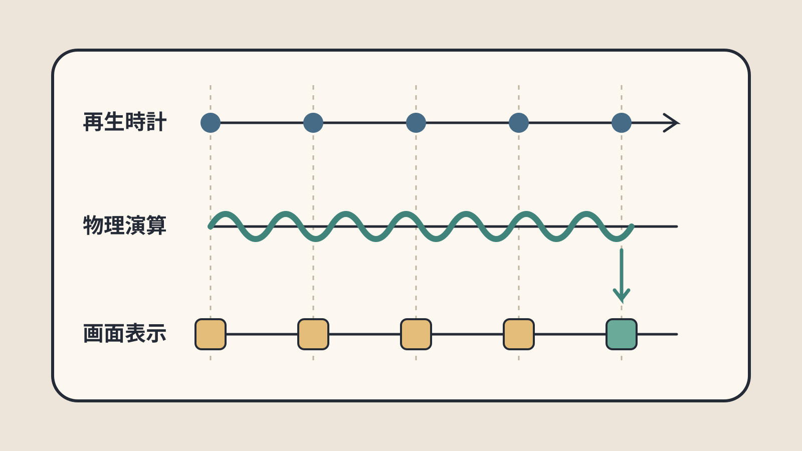

VMDは再生されている モデルは踊っている 物理演算の設定もオン それなのに 髪や衣装に物理の揺れが出てこない
当時の録画でFPSオーバーレイを見ると VMDの再生時計は毎秒30フレームで進んでいました 一方 物理を反映した姿勢の表示頻度は0 Hz 再生ボタンを押して動き出すことと 物理まで反映した姿勢が画面に出ることは 別の出来事でした
第8回では ベルトや脚の変形を手がかりに 剛体やIKの計算を見直しました 今回は その計算結果をいつ画面に出すか 先に描けば滑らかになると思って試した 再生優先モードの話です
1 揺れには それまでの動きが残る
VvfMにBullet 3.25を組み込んだのはv0.19.0です VMDからその時点のボーンの姿勢を求め 髪や衣装の剛体に対して物理演算を行い その結果をボーンに反映します
揺れ方は いまの姿勢だけでは決まりません 同じ姿勢で立っていても 動きを止めた直後と しばらく静止していたときでは 髪の動きが違います 物理は直前の位置や速度を引き継いで 決まった時間刻みで進みます 画面の更新が遅れたからといって その計算まで飛ばしてしまうと 次に見える揺れ方が変わり得ます
2 物理が追いつくまで 先に描けばいい？
v0.52.0で試したのは 画面と物理を別々に進める方法です 当時の設定名は「再生優先モード」 物理の結果を待たずにVMDの姿勢を先に描き その裏でBulletの計算を進めます 物理が追いついたら シーン全体を物理を反映した姿勢へ切り替える設計でした
ところが 重い場面では切り替える前に 再生時計が次のフレームへ進んでしまいます 複数モデルの物理を反映した姿勢を同じフレームで揃えようとしても 揃うころには対象のフレームが古くなっている 次のフレームでまた揃え直す その繰り返しで 踊りは進むのに揺れが画面へ戻ってこなくなりました
録画の「0 Hz」が示していたのは 物理を反映した姿勢が表示へ届いていないことです そこからBulletの計算自体が止まったとは判断できません 別の診断では 物理を反映した姿勢の表示頻度が0 Hzでも裏で物理の計算が進んでいることを確認しました

- 再生時計は次のフレームへ進む
- 裏では必要な物理演算を続ける
- 物理の結果が同じフレームで揃うまでは VMDの姿勢を先に表示する
3 揺れは戻った でも滑らかさは別だった
最初の修正候補では 30秒の確認で物理を反映した姿勢が画面に出たのは1回だけでした 計算結果が用意できることと それが実際に画面に出ることを分けて確認し この候補は採りませんでした
v0.52.4では 戻すと決めた時点とモデルの組を 画面に出せるまで保持するようにしました 5モデルの60秒診断で 必要な固定ステップを欠かさず 物理を反映した姿勢へ戻せることを確認 一方 モーフ欄を開いた通常画面の別の試験では 実表示FPSの中央値は約22 fpsでした 揺れは戻った けれど 編集しながらの再生にはまだ余裕がありませんでした
4 物理優先でも FPSは上げられた
標準の物理優先モードでは 物理を反映した姿勢を用意してから表示します この経路で速くするために見直したのは 物理の計算回数よりも 描画を出す直前に何を待っているかでした
前のフレームの描画が進んでいる間に 次のフレームで使うデータの確認や整理をCPU側で先に済ませる いったん内容を検証した姿勢データは 管理用の印だけが変わったときに中身をすべて調べ直さない 新しいデータはこれまでどおり確認します
v0.57.30では 同じビルドの物理優先経路で先行準備の有無を比較しました 11モデル 物理演算120 Hz 40秒の比較を5対 実表示FPSの中央値は 先行準備なしの 23.0 fps から ありの 28.0 fps へ 計測した固定ステップに欠落はありませんでした 同じビルド内の比較なので 「再生優先から物理優先に切り替えると速くなる」という数字ではありません 物理を反映する経路でも 描画前の待ちを減らせばFPSを上げられる その手応えが得られた比較です
5 エンジンの選択と 表示の順番は別
v0.56.1で加えた「Bullet 2.75互換／3.25ネイティブ」は 物理の解き方を選ぶ設定です 2.75互換は別のエンジンを載せたものではなく 同梱の3.25で既知の挙動差を吸収する方式です
一方 「物理優先モード／再生優先モード」は結果をどの順番で画面に出すかの選択でした v0.56.14で再生優先度の設定欄は非表示になりましたが 内部処理と以前の保存値は残されています 標準のライブ再生と動画書き出しは物理優先です
おわりに 残したい揺れと 減らせる待ち
タイムラインで1フレーム進めて すぐ戻る 制作中は そんな小さな往復を何度も繰り返します 後のv0.58.6では 後ろへ戻ったときに保存済みの物理状態をうまく扱えず 先頭から計算し直していた問題も直しました ある再現条件では その往復で不要になった再計算は19,416ステップでした
先に画面を動かせば軽く見えると思って始めた試みでした 最後に効いたのは 揺れを省くことではなく 揺れを画面に出す直前の待ちと すでに済ませた仕事のやり直しを減らすことでした
注記
- 冒頭の0 Hzは物理を反映した姿勢の表示頻度です 録画時にBullet自体が止まったかは確認できていません
- v0.57.30の数値は固定したシーンの比較です FPSの差は同一ビルドでの先行準備の有無 重複検証の削減は先行準備を有効にした別ビルド間での準備時間・遅延の比較で確認しました すべてのシーンでの改善や60 fps達成を示すものではありません
- Bullet 2.75互換は Windows版MMDや全モデルでの完全一致を意味しません 後方シークの19,416ステップは物理演算120 Hzでの特定の再現条件で省けた再計算です
用語解説
- Bullet
- 剛体の動きや衝突 ばねなどを計算する物理エンジン
- 固定ステップ
- 物理の時間を決まった幅で進めること 120 Hzなら1秒を120回に分けて計算します
- 実表示FPS
- 描画を頼んだ回数ではなく 実際に画面に出たフレームの数を1秒あたりで表したもの